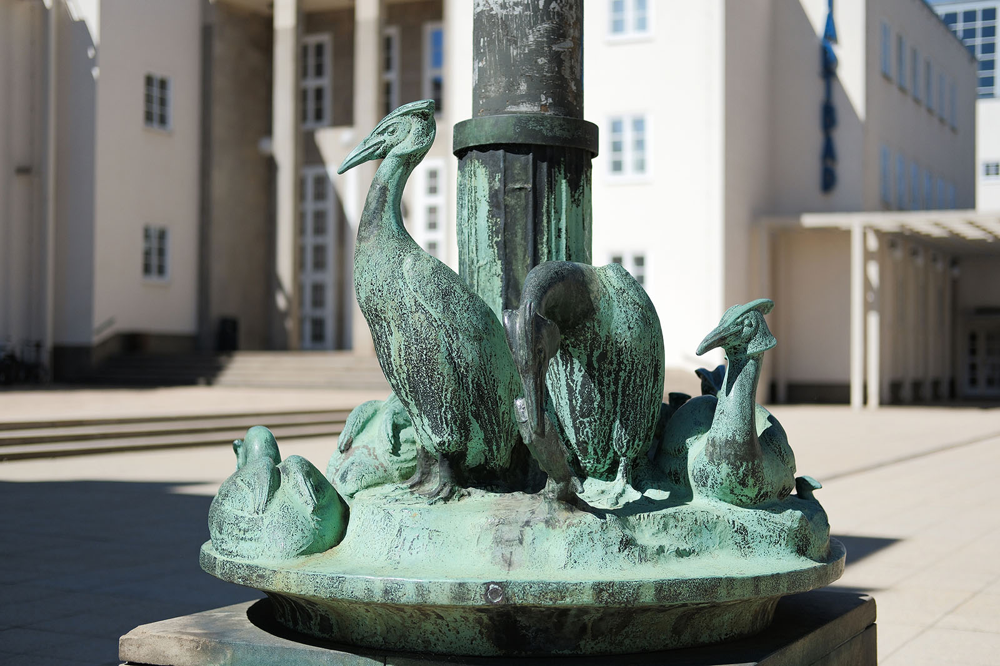
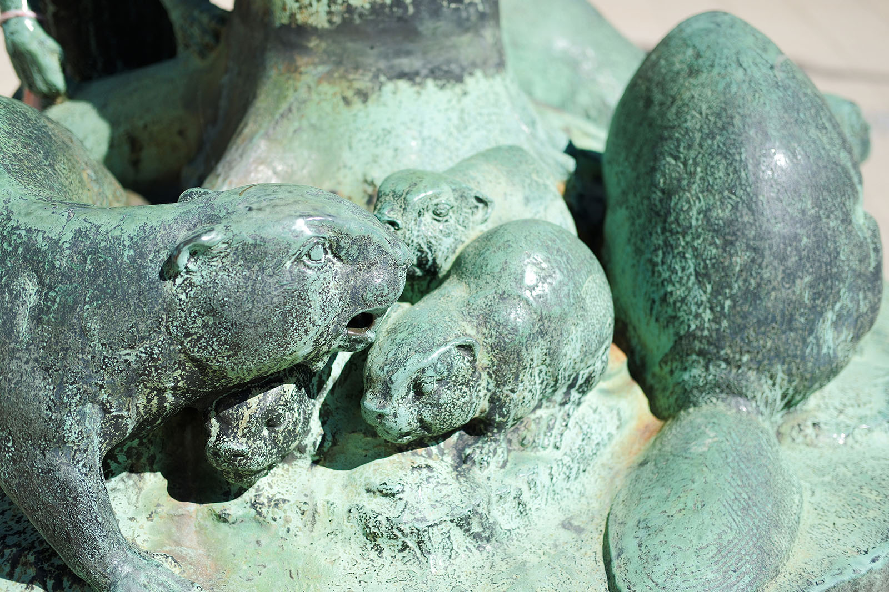
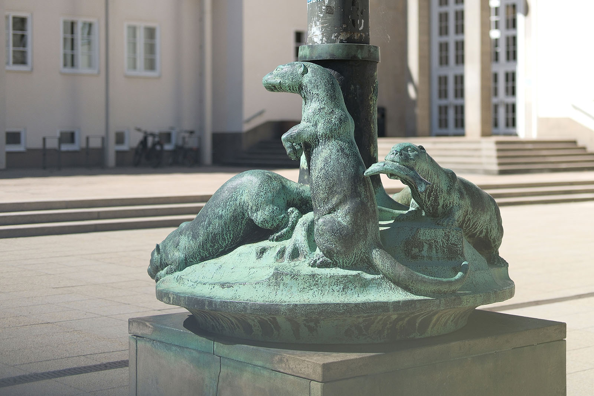
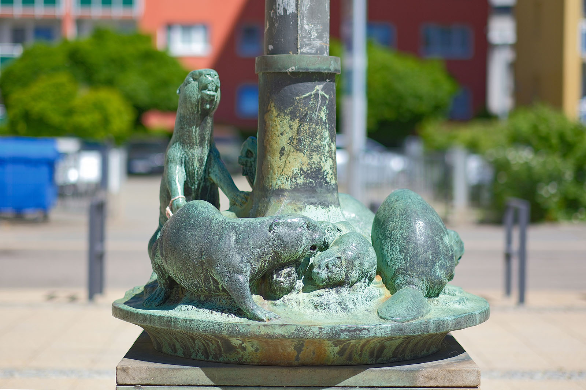
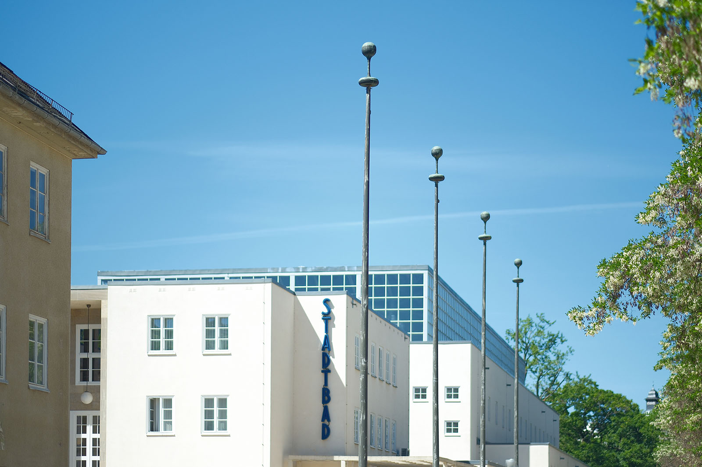
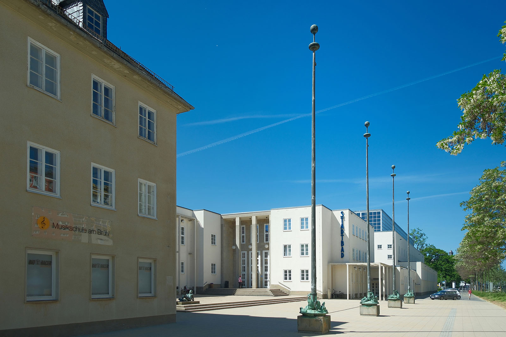
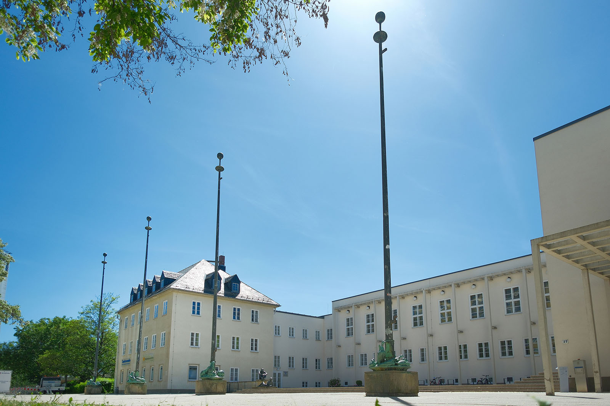

Recherche und Werkbeschreibung: Roman Pilz. Fotografien: Frank Krüger. Text und Bild wechseln sich wie in einem Magazin ab. Ein Klick auf ein Bild öffnet die Großansicht.
Bruno Ziegler hatte sich in den 1920er Jahren bereits mehrfach an der figürlichen Dekoration repräsentativer Bauten in Chemnitz bewährt, als er wohl vom Stadtbaudirektor und Architekten des Stadtbades, Fred Otto, den Auftrag erhielt, zusammen mit dem Bildhauer Heinrich Brenner den Vorplatz des Stadtbades künstlerisch auszuschmücken.
Bruno Ziegler wurde 1879 in Gotha geboren und verstarb 1941 in Chemnitz. Ziegler machte zunächst von 1893 bis 1895 eine Ausbildung als Holzschnitzer. Anschließend lernte er weiter bei Georg Kugel an der Großherzoglichen Zeichenschule in Eisenach.
Ein privater Förderer sah das Talent und ermöglichte dem aus einfachen Verhältnissen stammenden Ziegler ab 1898 ein Studium bei Karl Groß an der Dresdner Kunstgewerbeschule. Neben seiner Ausbildung arbeitete der junge Ziegler immer, zunächst in einer Maschinenfabrik in Gotha und dann in der Kunstgießerei Gebrüder Weschke in Dresden. Von 1902 bis 1907 arbeitete er in der keramischen Industrie in Nordböhmen und besuchte nebenbei auch die keramische Fachschule Teplitz.
Anschließend ließ er sich kurz wieder in seiner Heimatstadt Gotha nieder und arbeitete dort als Gestalter von Möbeln, Zier- und Haushaltswaren. Etwa 1910/11 ließ Bruno sich als freischaffender Bildhauer in Chemnitz nieder. Ab 1913 war er Mitglied im Deutschen Werkbund (DWB) und ab 1924 in der Künstlergruppe Chemnitz.
Von 1919 bis 1925 war Ziegler auch Lehrer für Modellieren an der Königlichen Gewerbeakademie Chemnitz. In der wachsenden Industriestadt Chemnitz wurde Ziegler vielfach für die dekorative Ausgestaltung von Bauwerken beauftragt. So gestaltete er für den Architekten Basarke ein Relief über dem Portal der Deutschen Bank.
Etwa 1928 entstanden die markanten Arbeiterbilder über dem Eingang des heutigen Chemnitzer Polizeipräsidiums (vor 1931 Verwaltungsgebäude der Sächsischen Maschinenfabrik) und 1929 gestaltete er den figürlichen Türschmuck des heutigen Agricola-Gymnasiums. Über Chemnitz hinaus, in der Erzgebirgsregion, wurde Ziegler im Anschluss des 1. Weltkriegs vor allem für eine Vielzahl von Ehrenmälern für gefallene Soldaten bekannt.
Neben seinen baugebundenen Arbeiten und Denkmälern gestaltete er auch Kleinplastiken, hier vor allem Tier- und Personenbildnisse sowie mythologische Gestalten. Kurz nach seinem Tod fand 1942 in der Kunsthütte Chemnitz eine Gedächtnisausstellung für Bruno Ziegler statt.
Das Bad wurde im Stil des Neuen Bauens sachlich und funktional gestaltet. Die Figuren auf dem Vorplatz mit seinen Freitreppen und Pergolen bildeten somit eher volksnahe Elemente, die durch Naturalismus und Lebensnähe eine einladende und vermittelnde Funktion einnehmen. Ein Entwurfsmodell von Otto aus dem Jahr 1927 zeigt die Schmuckelemente noch nicht, spätere Pläne für den Bau, der ab 1929 begonnen wurde, weisen aber bereits die Position der vier Fahnenmasten aus. Sicher ist, dass die Plastiken "Aus dem Badeleben" von Brenner und Zieglers vier Gruppen von "Wassergetier" zur Eröffnung des Bades 1935 aufgestellt wurden.
Zieglers bronzene Tiere überlebten neben nur wenigen anderen Plastiken aus Metall in Chemnitz den 2. Weltkrieg und wurden nicht wie Brenners Figurenpaar für die Rüstung eingeschmolzen oder zerstört. Die vier Tiergruppen sind über einem quadratischen Steinsockel rund um den Fuß von vier schlank in den Himmel ragenden Fahnenmasten eingefügt. Oben, von einem ringförmig um den Schaft gearbeiteten Absatz aus, weiten sich die unterschiedlichen Szenen nach unten und gründen auf einem Gesims mit der Anmutung einer Schale.

Der im Bildbereich liegende Teil des Schaftes wird jeweils von einer zu den entsprechenden Tieren passenden Oberfläche überformt: fließendes Wasser, wie aus Brunnenöffnungen, für die Enten; ein Baumstamm für die Biber; ruhige Flächen und ein fächerförmiges Ornament, wie eine Fischflosse, für den Otter sowie Schilfrohr für die Haubentaucher, die sich vor allem im geschützten Uferbereich aufhalten.

Der Künstler hat die Gruppen symmetrisch angeordnet – außen die beiden Vogelgruppen, innen die zwei pelzigen Säugetiere. In der Anordnung der Figuren um die Mitte versucht Ziegler ebenfalls, stimmigen Gleichklang bei aller lebendigen Unruhe zu finden. Jeweils ein Kopf aus der Gruppe reckt sich hoch, mit aufmerksamem Blick nach oben. Immer werden ältere Tiere mit ihren Jungtieren gezeigt. Immer sucht eines der Tiere neugierig über den "Tellerrand" des Sockels hinauszuschauen und mit dem Stadtraum und dem Beobachter zu interagieren.

Das Thema der Wassertiere liegt für die Ausgestaltung eines öffentlichen Bades nah – die guten Schwimmer des Tierreiches sollen den Besuchern und vor allem den Kindern anschaulich die Freude am Wasser zeigen. Dass Gedanken des Heimat- und Umweltschutzes in der schmutzigen Industriestadt ebenfalls eine Rolle bei der Motivwahl spielten, liegt nahe. Alle Tierarten sind ursprünglich in Sachsen heimisch.

Fast alle der Tiere waren zum Zeitpunkt der Entstehung der Plastiken mehr oder weniger ausgerottet oder gefährdet. Vor allem für Bieber und Otter waren die Eingriffe in die Flusssysteme der Region schwerwiegend. Heute aber können durch erfolgreiche Schutzmaßnahmen neben Enten auch wieder Haubentaucher auf dem Schlossteich gesichtet werden und bauen Biber im Chemnitztal ihre Burgen. Nur der Fischotter gehört weiterhin zu einer der gefährdetsten Tierarten – allein in der Oberlausitz halten sich kleine Bestände.

Die vier Bronzen wurden in der Kunst- und Glockengießerei Lauchhammer gegossen und sind dunkel patiniert. Mit der Zeit färben Wasser und Wetter das Metall mit einer grünlichen Oxidationsschicht, die aber mit ihren teils sichtbaren Fließspuren gut zum Thema passt. Der Fahnenmast selbst ist in ähnlich dunklem Metall gestaltet und bildet so mit seiner figürlichen Basis eine gute Einheit. Abstrakt und mit geometrischen Kugel- und Kreisformen an seiner Spitze wird er selbst zum eleganten Schmuck, auch wenn eigentlich so gut wie nie wirklich Fahnen an seinen Masten wehen.

Nah am Wasser gebaut
Vier Bronzeskulpturen „Wassergetier“ auf den Sockeln der Fahnenstangen vor dem Stadtbad von Bruno Ziegler (1935)
